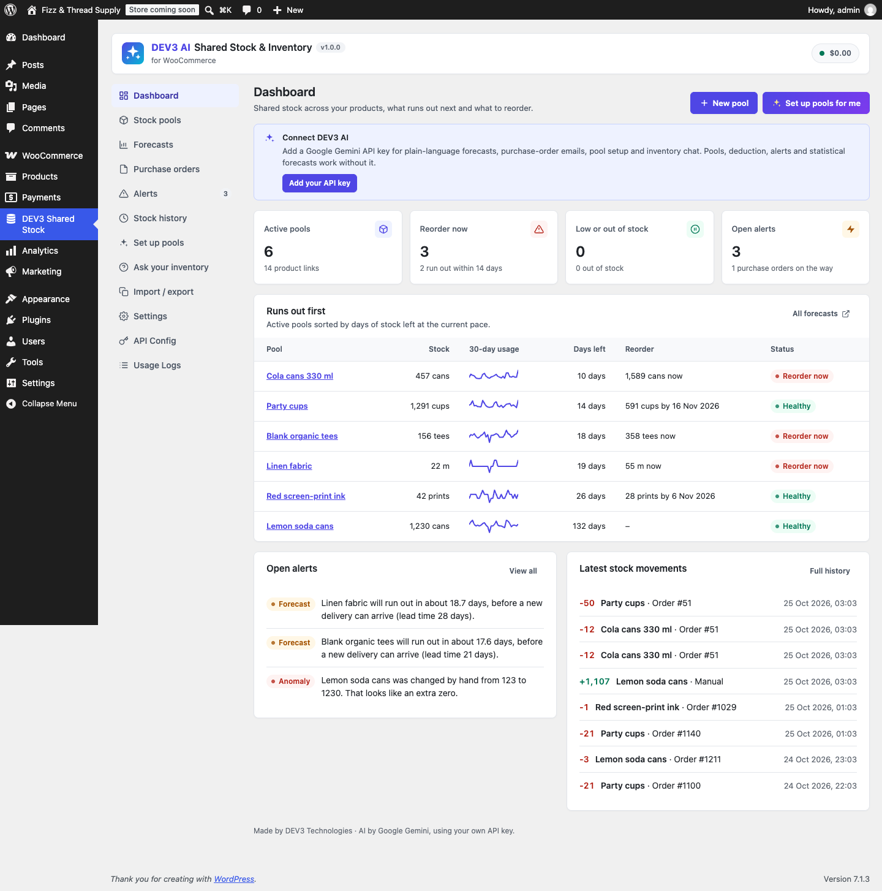
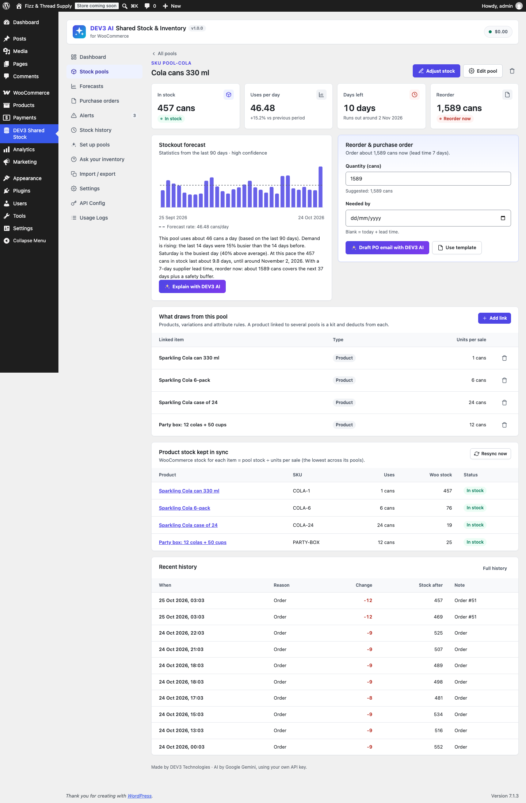
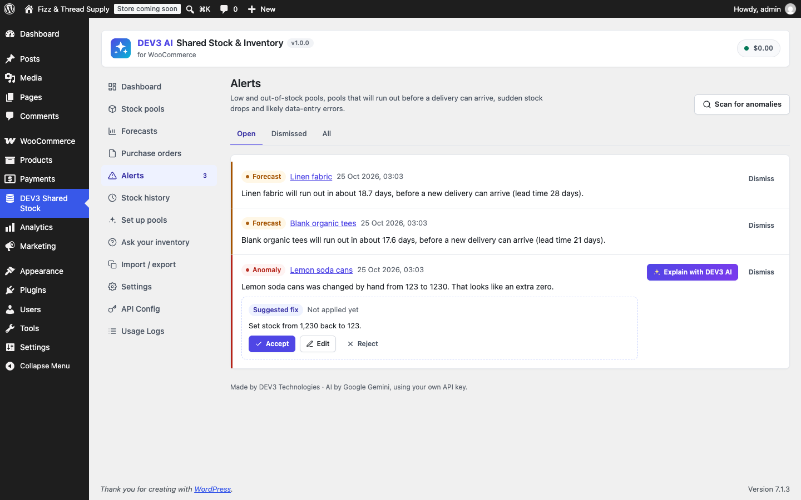
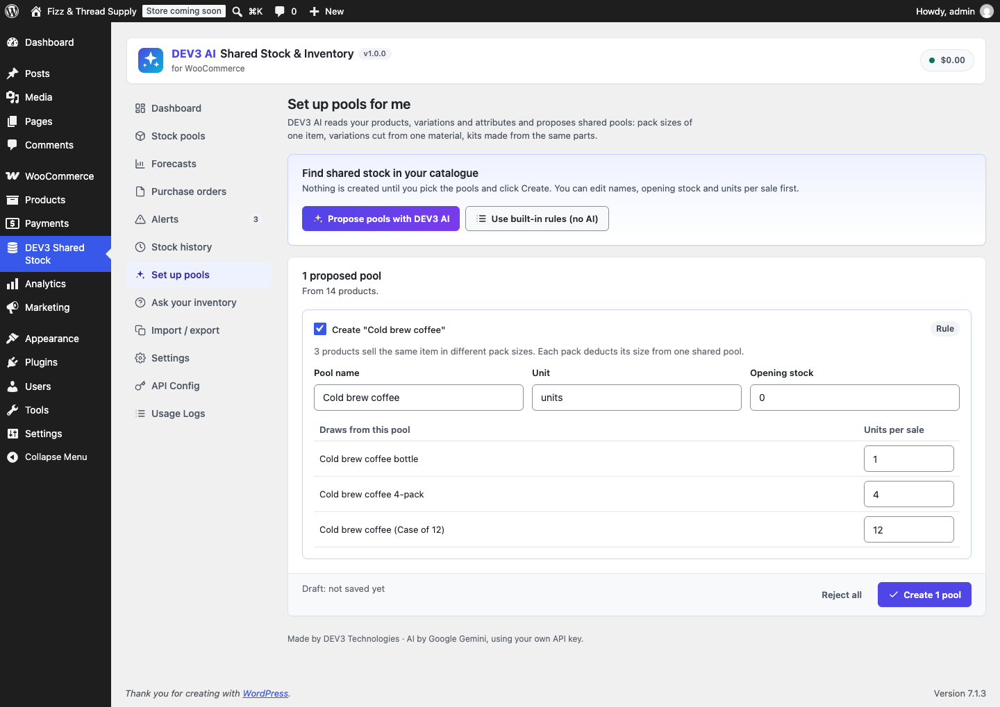
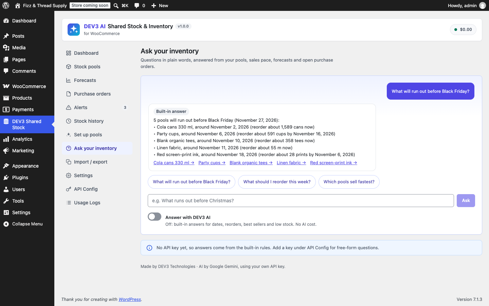

DEV3 AI Shared Stock & Inventory for WooCommerce
One physical stock, many products. Pools, variable deduction, attribute rules, alerts, history and CSV, plus DEV3 AI forecasts, purchase-order drafts, pool setup and inventory chat.

Installation
- WordPress 6.0+, PHP 7.4+ (tested on 8.3), WooCommerce 8.0+.
- Plugins > Add New > Upload Plugin, choose
dev3-ai-shared-stock-for-woocommerce.zip, Install, Activate. - WooCommerce > Settings > Products > Inventory: turn on Enable stock management. WooCommerce only reduces stock for orders when this is on.
- Open DEV3 Shared Stock in the admin menu.
The plugin declares compatibility with High-Performance Order Storage (HPOS) and the Cart & Checkout blocks. Shop managers (manage_woocommerce) can use the inventory screens; API Config and Settings need an administrator.
Quick start
- Stock pools > New pool: name "Cola cans", unit "cans", opening stock 480, low-stock threshold 48.
- On the pool page, Add link: "Cola can" with 1 unit per sale, "Cola 6-pack" with 6, "Cola case of 24" with 24.
- Each product now shows the shared stock: the can 480, the 6-pack 80, the case 20. Sell any of them and all three update.
- Or use Set up pools for me and accept the proposals.
Gemini API key setup
- Go to Google AI Studio, sign in and click Create API key.
- In WordPress open DEV3 Shared Stock > API Config, paste the key, click Validate, then Save.
- Optional: set a monthly AI budget (USD). When it is reached, DEV3 AI pauses and every feature falls back to its non-AI version.
wp-config.php: define( 'DEV3SS_GEMINI_API_KEY', '…' );. The key is stored encrypted and is never sent to the browser.How shared stock works
A pool holds physical units. A link says how many pool units one sale of an item uses. Links can point at:
| Link | Example | Applies to |
|---|---|---|
| Simple product | Cola 6-pack uses 6 cans | That product |
| Variable product | Crew tee uses 1 blank tee | Every variation |
| Variation | Red tee also uses 1 red print | That variation |
| Attribute rule (store-wide) | Material = Linen uses 0.5 m linen | Every product or variation with that value |
| Attribute rule (one product) | Tee with Size = XL uses 1.2 blanks | That product's matching variations |
All matching links apply, so an item linked to two pools (a kit) deducts from both. When several links point to the same pool, the most specific wins: variation > product > product attribute rule > store-wide attribute rule.
Pools & links
Each pool has a name, optional SKU (used by CSV import), unit, low-stock threshold, backorders switch, status (paused pools are ignored by orders and carts), supplier name and email, lead time and unit cost. Adjust stock with Add, Remove or Set to; every change is logged with an optional note.
You can also link from the product editor: the Shared stock tab (simple and variable products) and the fields on each variation.

Orders, refunds, cancellations and edits
- When WooCommerce reduces an order's stock (processing, on-hold, completed, payment complete) each line deducts
quantity × units per salefrom its pools. - Cancelled, failed-to-pending or back-to-pending orders give the units back.
- Refunds with Restock refunded items return the refunded quantity (partial refunds work, the total never exceeds what was ordered).
- Editing quantities, adding or deleting lines on an order that holds stock moves the difference.
- Each order line stores the pools and units it used, so changing a link later never changes what an old order returns. Every hook is idempotent.
- An order note lists the pool changes ("Shared stock updated: Cola cans −12 (468 cans)").
The test suite covers 36 scenarios, run on both legacy order storage and HPOS.
Product stock sync & cart check
Linked products get Manage stock on and a quantity of floor(pool stock ÷ units per sale), the lowest across their pools. Pools that allow backorders set the product to "Allow, but notify customer". This keeps the storefront stock text, the quantity selector, product feeds, the REST API and the block checkout correct.
The whole-cart check adds up what the cart needs from each pool, so a 6-pack and 5 single cans cannot oversell a pool of 10. It runs on add to cart, cart updates, the cart page and checkout, and in the Store API used by the Cart and Checkout blocks. Shoppers see neutral messages such as "Sorry, only 4 more of "Cola can" can be added to your cart."
Bundles & composite products
WooCommerce Product Bundles, Composite Products and Mix and Match add the container and each bundled item as order lines. Each line is resolved on its own. Under Settings > Bundles and composite products choose: both (default, whatever is linked), only the bundled items, or only the bundle itself. A product linked to several pools works as a built-in kit without any bundle plugin.
Alerts & anomalies
- Low stock and out of stock alerts when a pool crosses its threshold or zero, with an email to the recipients in Settings. They close when stock recovers.
- Forecast alerts when a pool will run out before a new delivery could arrive (days left ≤ lead time).
- Anomalies: manual or imported changes that look like typos (an extra or missing zero, swapped digits, below zero without backorders, unusually large removals or additions) and sudden one-day drops far above normal (daily scan; sensitivity in Settings).
- A suggested correction is shown as a draft: Accept, Edit or Reject. Explain with DEV3 AI adds the likely cause and, when the data points to a typo, a suggested stock level.

Stock history, CSV import & export
Stock history lists every change with reason (order, refund, cancelled order, order edited, manual, CSV import, restock, opening stock), order number, product and note. Filter by pool, reason and dates; export to CSV.
Import / export:
| File | Columns |
|---|---|
| Pools | id, name, sku, stock, unit, low_threshold, backorders, status, supplier_name, supplier_email, lead_time_days, unit_cost, notes (rows match by id, then SKU; others are created) |
| Links | pool_id or pool_sku, product_id or product_sku, attribute, value, qty |
| History | export only |
Imports always show a preview first. Comma and semicolon files are accepted, up to 5,000 rows. Exports guard against spreadsheet formula injection.
Forecasts & reorder suggestions
Statistics first, from the stock history (net of cancellations and refunds):
- Daily rate = 50% exponentially weighted average + 30% last two weeks + 20% long-run mean.
- Trend (last period vs the one before), weekday pattern, standard deviation.
- Safety stock = the larger of 1.65 × σ × √lead time (≈95% service level) and rate × safety days.
- Reorder point = rate × lead time + safety stock; reorder date = when stock (plus open purchase orders) reaches it.
- Suggested quantity covers lead time + "reorder covers" days plus the safety stock.
Every forecast comes with a plain-words explanation. Explain with DEV3 AI adds a short summary, a risk level and tips, written only from these numbers. Forecasts refresh daily (statistics only) and on Recalculate all, which runs as a background job with progress (optionally asking DEV3 AI to explain the pools that need a reorder).
Purchase orders
- On a pool, check the quantity and date, then Draft PO email with DEV3 AI or Use template.
- Review the subject and email; edit, regenerate or reject. Save as draft PO stores it.
- Email to supplier sends it with
wp_mail(Reply-To = site admin email). - When the delivery arrives, Receive adds the received quantity to the pool (logged as "Restock").
Sent purchase orders count as incoming stock in forecasts.
Set up pools for me
Built-in rules spot pack sizes in product names ("6-pack", "Case of 24", "x12"), pack-size variations and material/fabric attributes shared by several products. Propose pools with DEV3 AI reads up to 250 products with their variations and attributes and proposes pools with links and opening stock. Proposals are drafts: tick the ones you want, edit names, stock and units per sale, then Create. Unknown product ids or attributes returned by AI are dropped.

Ask your inventory
Ask in plain words: "What will run out before Black Friday?", "What should I reorder this week?", "Which pools sell fastest?". DEV3 AI answers from a snapshot of your pools, sales pace, forecasts, open purchase orders and upcoming retail dates (Black Friday, Cyber Monday, Christmas, New Year, Valentine's Day, Mother's Day, back to school). Without AI, built-in answers handle dates, reorders, best and slow sellers, and low stock.

Settings
| Setting | Default | What it does |
|---|---|---|
| Deduct pool stock for orders | On | Master switch for all deduction. |
| Keep product stock in sync | On | Writes pool availability into linked products. |
| Check the whole cart | On | Cart guard for classic and block carts. |
| Bundles and composite products | Both | Which bundle lines deduct. |
| Default threshold / lead time | 5 / 7 days | Used for new pools. |
| Email alerts, recipients | On, admin email | Low and out-of-stock emails. |
| Detect anomalies, sensitivity | On, medium | Typos and sudden drops. |
| History window, safety days, reorder covers | 90, 7, 30 | Forecast inputs. |
| DEV3 AI features | All on | Toggle each AI feature; the non-AI version stays available. |
| Company name, email signature | Site title | Used in purchase orders. |
API Config holds the key, models (default gemini-2.5-flash, pro gemini-2.5-pro), the monthly budget, the AI on/off switch, caching and PII masking. Usage Logs show requests, tokens and estimated cost per feature.
Hooks
| Hook | Type | Use |
|---|---|---|
dev3ss_stock_changed( $pool_id, $delta, $after, $reason, $ctx ) | action | After every pool change. |
dev3ss_pool_created( $id ), dev3ss_pool_deleted( $id, $products ) | action | Pool lifecycle. |
dev3ss_pool_links_changed( $pool_id ), dev3ss_link_deleted( $link, $products ) | action | Links changed (products are re-synced). |
dev3ss_alert_raised( $id, $alert ) | action | Send alerts to Slack etc. |
dev3ss_resolve_links( $pools, $product_id, $variation_id, $attrs ) | filter | Change which pools an item uses. |
dev3ss_sync_order( $sync, $order, $active ) | filter | Skip pool sync for some orders. |
dev3ss_skip_bundle_role( $skip, $role, $mode ) | filter | Custom bundle handling. |
dev3ss_mirror_quantity( $qty, $product, $links ) | filter | Adjust the stock written to a product. |
dev3ss_forecast( $forecast, $pool ) | filter | Adjust forecasts. |
dev3ss_alert_email( $mail, $pool, $type ), dev3ss_po_email( $mail, $po ) | filter | Change emails (return false to skip alerts). |
dev3ss_inventory_capability | filter | Who can manage stock (default manage_woocommerce). |
dev3ss_prompt_<id> | filter | Override prompts: forecast_explain, po_email, setup_pools, anomaly_explain, ask_inventory. |
REST API
Namespace dev3ss/v1; every route needs a logged-in user with the inventory capability and a X-WP-Nonce header.
GET dashboard
GET pools POST pools
GET pools/{id} PUT pools/{id} DELETE pools/{id}
POST pools/{id}/adjust { mode: add|remove|set, qty, note }
POST pools/{id}/links { product_id, attr_key, attr_value, qty }
DELETE links/{id}
POST pools/{id}/sync | forecast | explain | po-draft
GET products/search?q= GET attributes
GET history?pool_id=&reason=&from=&to=&page=
GET export?type=pools|links|history
POST import { type, csv, dry_run }
GET forecasts POST forecasts/run { explain }
GET purchase-orders POST purchase-orders PUT purchase-orders/{id}
POST purchase-orders/{id}/send | receive | cancel
GET alerts?status= POST alerts/scan
POST alerts/{id}/dismiss | reopen | explain | fix { stock }
POST setup/suggest { ai } POST setup/apply { proposals }
POST ask { question, history, ai }
Privacy
DEV3 AI sends only inventory data (pool names, quantities, sales statistics, product names and attributes) to Google Gemini, and only when you use an AI feature. No customer data is sent. A privacy-policy snippet naming Google Gemini is added under Settings > Privacy, and the usage log supports the WordPress personal-data exporter and eraser.
FAQ
Orders do not change my pools.
Check that WooCommerce stock management is on and "Deduct pool stock for orders" is on. Paused pools are ignored.
I edited a product's stock by hand and it changed back.
Linked products follow their pool. Adjust the pool instead, or turn off "Keep product stock in sync".
Can a product use more than one pool?
Yes. Link it to each pool; it sells only while every pool has enough.
What if a pool is deleted?
Its links and alerts are removed; history is kept; product stock stays where it was. Orders that used it simply skip it on refund or cancel.
Does it work without an API key?
Yes. Everything except the AI explanations, AI email drafts, AI proposals and free-form chat works without a key, and each has a non-AI alternative.
Multisite?
Yes, activate per site. Each site has its own pools.
Changelog
1.0.0
- Initial release.